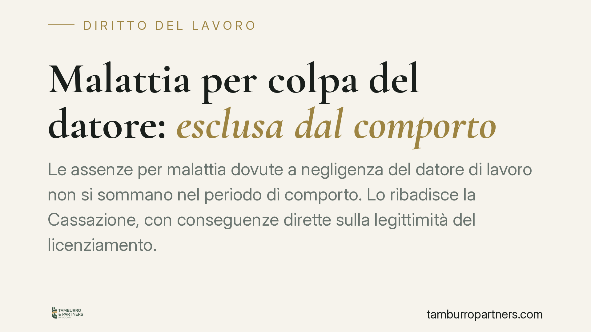

Malattia per colpa del datore: esclusa dal comporto
Le assenze per malattia dovute a negligenza del datore di lavoro non si sommano nel periodo di comporto. Lo ribadisce la Cassazione, con conseguenze dirette sulla legittimità del licenziamento. La chiave è la prova della responsabilità aziendale per violazione degli obblighi di sicurezza previsti dall'art. 2087 del codice civile. Un tema che incide su lavoratori e imprese in egual misura.

Il fatto
Il periodo di comporto è l'arco di tempo entro il quale il lavoratore assente per malattia conserva il posto. Superato quel limite, fissato dai contratti collettivi, il datore può legittimamente recedere dal rapporto.
La domanda è semplice ma delicata: e se la malattia è stata causata proprio dal datore di lavoro? La Cassazione, con una linea consolidata nel tempo, ha chiarito che quelle assenze non si computano nel comporto. Il datore non può cioè licenziare per superamento del limite quando l'infermità dipende da una sua condotta illecita.
Inquadramento normativo
Il riferimento è l'art. 2087 del codice civile, che impone all'imprenditore di adottare tutte le misure necessarie a tutelare l'integrità fisica e la personalità morale dei lavoratori. È la norma cardine in materia di sicurezza sul lavoro: obbliga il datore non solo al rispetto delle prescrizioni specifiche, ma a un dovere generale di prevenzione dei rischi.
La Corte di Cassazione, Sezione Lavoro, ha affrontato la questione in più pronunce (tra cui quelle del 15 dicembre 2014, del 19 ottobre 2018 e del 4 febbraio 2020). Il principio è coerente: se l'assenza deriva dalla violazione degli obblighi di sicurezza, il datore non può trarre vantaggio dalla propria inadempienza sommando quei giorni al comporto. Sarebbe, in sostanza, un abuso.
La ragione è logica prima ancora che giuridica. Il comporto tutela l'interesse aziendale a non subire assenze prolungate; ma quell'interesse cede quando è lo stesso datore ad aver provocato la malattia. Nessuno può invocare a proprio favore una situazione che ha causato con la propria condotta illecita.
Implicazioni pratiche
Per il lavoratore la conseguenza è concreta: un licenziamento fondato sul superamento del comporto può essere illegittimo se una parte delle assenze deriva da malattia causata dal datore. In quel caso i giorni "colpevoli" vanno scorporati dal conteggio, e il limite potrebbe non risultare superato.
Attenzione però a un punto centrale. La responsabilità del datore non si presume: va provata. Non basta lamentare uno stato di stress o un ambiente di lavoro ostile. Occorre dimostrare il nesso tra la malattia e la specifica violazione degli obblighi di sicurezza o di tutela della persona.
Tipici esempi: mansioni svolte senza dispositivi di protezione, esposizione a sostanze nocive, carichi di lavoro insostenibili imposti in violazione delle norme, condotte vessatorie riconducibili al mobbing o allo straining. In tutti questi casi serve documentazione medica, testimonianze e, spesso, una consulenza tecnica che colleghi la patologia alla condotta aziendale.
Per il datore di lavoro, il messaggio è speculare. Prima di licenziare per superamento del comporto occorre verificare l'origine delle assenze. Un recesso adottato senza questa valutazione espone al rischio di soccombenza in giudizio, con le conseguenze reintegratorie o risarcitorie previste dalla disciplina applicabile.
Cosa fare in concreto
- Conserva la documentazione medica: certificati, referti e diagnosi che colleghino la patologia alle condizioni di lavoro sono la base di ogni contestazione.
- Ricostruisci il nesso causale: raccogli prove sulle mansioni svolte, sull'ambiente e sulle eventuali violazioni delle norme di sicurezza. La responsabilità va dimostrata, non semplicemente affermata.
- Verifica il conteggio del comporto: individua quali assenze siano riconducibili alla condotta datoriale e vadano quindi escluse dal calcolo.
- Agisci nei termini: l'impugnazione del licenziamento è soggetta a decadenze rigorose. Muoviti tempestivamente per non perdere il diritto a contestarlo.
- Per le imprese, valutate prima di recedere: consigliamo un'istruttoria interna sull'origine delle assenze prima di avviare la procedura di licenziamento per superamento del comporto.
Un equilibrio da leggere caso per caso
La distinzione tra malattia ordinaria e malattia imputabile al datore non è teorica: sposta l'esito del giudizio. Ma poggia interamente sulla prova. Ogni situazione va analizzata nella sua concretezza, perché la fondatezza della pretesa dipende dagli elementi disponibili e dalla loro capacità di dimostrare la responsabilità aziendale.
---
*Contributo informativo a cura di Tamburro & Partners - Avv. Giuseppe Tamburro. Non costituisce parere legale.*
Ogni storia di lavoro ha i suoi tempi.
Se gestisci HR e vuoi un confronto su contenzioso, ispezioni o licenziamenti, scrivi allo studio. Ti rispondiamo entro un giorno lavorativo.